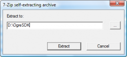
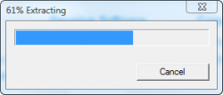
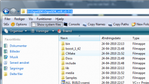
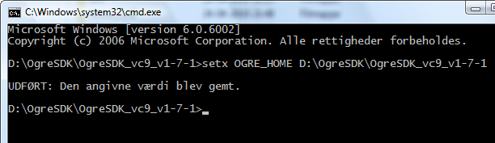

准备
- Go to SDK 下载
- Download the SDK matching your IDE version.
- Download and install DirectX: directx_aug2009_redist.exe
运行安装文件

解压到合适的位置

进入刚才安装的位置， 复制其完整路径

打开命令提示符设定OGRE_HOME环境变量为刚才复制的路径
因为你刚才是复制的路径， 因此这里你可以直接粘贴

setx OGRE_HOME D:\OgreSDK\OgreSDK_vc9_v1-7-1
Windows XP
set OGRE_HOME="D:\OgreSDK\OgreSDK_vc9_v1-7-1"
完成
编译例子需要先安装 CMake， 然后使用Visual Studio（Visual Studio 2008是可以的）, 将 SampleBrowser 设定为默认工程, 编译然后运行.
接下来
你可以继续看
编写一个基础程序 , and/or visit the
Ogre 教程
Linux
下面的内容适合想要在Linux平台上安装预编译的 OGRE SDK 的开发者.
Unix 用户喜欢编译安装所有的软件， 包括Ogre。
但是我们针对大多数的发行版都提供了预编译的包。请查看你的发行版是否在下方的列表中。
Ubuntu
使用PPA源
- 添加PPA
sudo add-apt-repository ppa:ogre-team/ogre
- 更新缓存
sudo apt-get update
- 安装 libogre-dev:
sudo apt-get install libogre-dev
接下来
你可以继续看
编写一个基础程序 , and/or visit the
Ogre 教程
Mac OS X
This section is for developers willing to install a precompiled Software Development Kit (SDK) under Mac OS X platform.
Once you have OGRE downloaded and setup, learn how to setup your first application.
- Go to http://www.ogre3d.org and click on Download.
- Next click on Download a Prebuilt SDK.
- Download the latest OSX SDK.
- Double-click the .dmg to mount it
- Drag & drop the OgreSDK folder wherever you like to install the SDK
- Install CMake for building the samples. Version 2.8.0 is said to be the most stable version for this. Cmake v2.8 (if you have a MacPorts installation of cmake, read the section below.)
- You might need this as well CG Toolkit (the download is only available for registered members of Nvidia Developer Zone. You may create your own account or use one of those BugMeNot)
- Start up Xcode and load the OgreSDK/OGRE.xcodeproj to build the samples. You probably want to build the debug versions of these. It will give you more insight when things go wrong. Make sure you select that from the build type dropdown.
- After you have built the samples look for them in OgreSDK/bin/debug. You should see SampleBrowser.app in there. Fire it up!
Cmake over MacPorts
If you have installed Cmake over MacPorts, you need to do some replacement inside CMakeScripts/ReRunCMake.make:
- replace /Applications/CMake\ 2.8-5.app/Contents/share/cmake-2.8/Modules/ by /opt/local/share/cmake-2.8/Modules/
- replace /Applications/CMake\ 2.8-5.app/Contents/bin/cmake by /opt/local/bin/cmake